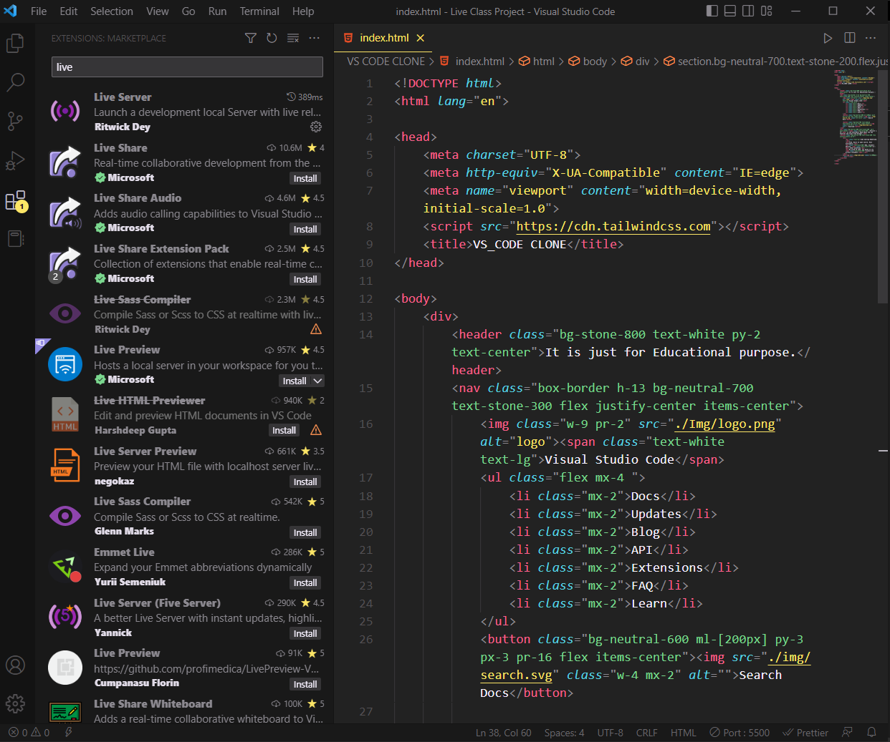

Version 1.73
is now available! Read about the new features and fixes from October.
Code editing Redefined.
Free. Bulit on open source. Runs everywhere.
Download for Windows
Stable Build
V
Web
,
Insiders edition
, or
other platforms
By using VS Code, you agree to its
license and privacy statement
.

 IntelliSense
IntelliSense
Run and Debug
 Built-in Git
Built-in Git
 Extensions
Extensions

Pulin G.
@gp
VS Code does so many things right. I’m constantly impressed by
the UX, and customizing workspace / user preferences is no
exception. 🙌🏼💯 It just keeps getting better ❤️
Ayush M.
@mota
VS Code will have deep remote development. You can connect to a
container running a different OS and use any VS Code plugins,
linting, debugging for that environment. 🔥🔥🔥
Ronak
@rj
VS Code is my most used and favorite editor. I love being able to
customize the editor - changing the layout, the icons, fonts and
color scheme is so easy!

Meet IntelliSense
Go beyond syntax highlighting and autocomplete with IntelliSense,
which provides smart completions based on variable types, function
definitions, and imported modules.
Print statement debugging is a thing of the past.
Debug code right from the editor. Launch or attach to your running
apps and debug with break points, call stacks, and an interactive
console.


Git commands built-in.
Working with Git and other SCM providers has never been easier.
Review diffs, stage files, and make commits right from the editor.
Push and pull from any hosted SCM service.
Extensible and customizable.
Want even more features? Install extensions to add new languages,
themes, debuggers, and to connect to additional services. Extensions
run in separate processes, ensuring they won't slow down your
editor.
Learn
more about extensions.


Deploy with confidence and ease
With
Microsoft
Azure
you can deploy and host your React, Angular, Vue, Node, Python (and
more!) sites, store and query relational and document based data,
and scale with serverless computing, all with ease,
all
from within VS Code
.
VS Code for
-
 JavaScript
JavaScript
-
 Python
Python
-
 Java
Java
-
 Markdown
Markdown
-
 TypeScript
TypeScript
-
 C/C++
C/C++
-
 JSON
JSON
-
 Powershell
Powershell
-
 HTML/CSS
HTML/CSS
-
 C#
C#
-
 PHP
PHP
-
 YAML
YAML
and many more languages on the Marketplace...
Windows 8, 10, 11
User Installer
x64
x86
Arm64
System Installer
x64
x86
Arm64
.zip
x64
x86
Arm64

Debian, Ubantu
Red Hat, Fedora, SUSE
.deb
x64
Arm32
Arm64
.rpm
x64
Arm32
Arm64
.tar.gz
x64
Arm32
Arm64
Snap
Snap Store
macOS 10.11+
.zip
Universal
Intel chip
Apple silicon
Want new features sooner?
Get the
Insiders
build
instead.
Use
vscode.dev
for quick edits online!
GitHub, Azure Repos, and local files.
LICENSE AND PRIVACY TERMS
By downloading and using Visual Studio Code, you agree to the
license terms
and
privacy statement
. VS Code automatically sends telemetry data and crash dumps to help
us improve the product. If you would prefer not to have this data
sent please go see
How to Disable Crash Reporting
to learn how to disable it.
Hello
Follow @iNeuron
 Star
Star
 139533
139533
Support
Privacy
Terms of Use
License
© 2022 Microsoft